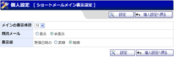
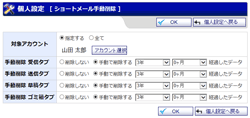
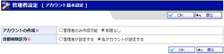
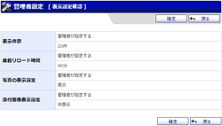
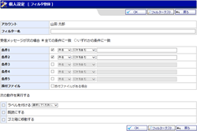

ショートメール一覧 受信
ショートメール一覧 送信
ショートメール一覧 草稿
ショートメール一覧 ゴミ箱
ショートメール一覧 ラベル
個人設定
ラベルの管理
ラベル登録
ラベル登録確認
個人設定 表示設定
メイン表示設定
ショートメール手動削除（個人）
ショートメール手動削除確認（個人）
ショートメール新規作成
ショートメール新規作成確認
宛先選択
ひな形一覧
ひな形追加
ひな形編集
受信内容確認
送信内容確認
受信内容確認（ゴミ箱）
送信内容確認（ゴミ箱）
草稿内容確認（ゴミ箱）
ショートメール詳細検索
管理者設定メニュー
ショートメール 転送設定
ショートメール 転送一括設定
ショートメール 転送一括設定確認
ショートメール自動削除設定
ショートメール自動削除設定確認
ショートメール手動削除
ショートメール手動削除確認
ひな形一覧(共通)
ひな形追加(共通)
ひな形編集(共通)
管理者設定 送信制限設定
管理者設定 送信制限設定登録
管理者設定 送信制限設定編集
管理者設定 送信制限設定登録確認
管理者設定 送信制限設定編集確認
統計情報
アカウントマネージャー
管理者設定 アカウント登録(基本設定)
管理者設定 アカウント登録確認(基本設定)
管理者設定 アカウント登録(自動削除)
管理者設定 アカウント登録確認(自動削除)
管理者設定 アカウント登録(転送設定)
管理者設定 アカウント登録確認(転送設定)
管理者設定 アカウント登録(その他)
管理者設定 アカウント登録確認(その他)
個人設定 アカウント登録(基本設定)
個人設定 アカウント登録確認(基本設定)
個人設定 アカウント登録(自動削除)
個人設定 アカウント登録確認(自動削除)
個人設定 アカウント登録(その他)
個人設定 アカウント登録確認(その他)
アカウントインポート
アカウントインポート確認
アカウントの管理
アカウント基本設定
アカウント基本設定確認
管理者設定 表示設定
管理者設定 表示設定確認
管理者設定 フィルタ設定
管理者設定 フィルタ登録
管理者設定 フィルタ登録確認
個人設定 フィルタ設定
個人設定 フィルタ登録
個人設定 フィルタ登録確認